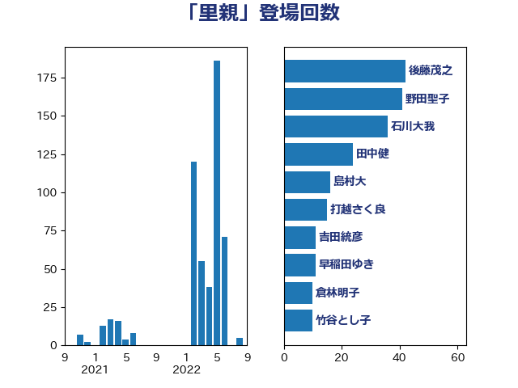

単語「里親」

| 後藤茂之 | 自由民主党 | 42 回 |
| 野田聖子 | 自由民主党 | 41 回 |
| 石川大我 | 立憲民主党 | 36 回 |
| 田中健 | 国民民主党 | 24 回 |
| 島村大 | 自由民主党 | 16 回 |
| 打越さく良 | 立憲民主党 | 15 回 |
| 吉田統彦 | 立憲民主党 | 11 回 |
| 早稲田ゆき | 立憲民主党 | 11 回 |
| 倉林明子 | 日本共産党 | 10 回 |
| 竹谷とし子 | 公明党 | 10 回 |
| 井坂信彦 | 立憲民主党 | 9 回 |
| 堤かなめ | 立憲民主党 | 9 回 |
| 宮口治子 | 立憲民主党 | 9 回 |
| 井出庸生 | 自由民主党 | 8 回 |
| 浅川義治 | 日本維新の会 | 8 回 |
| 菅家一郎 | 自由民主党 | 8 回 |
| 佐藤英道 | 公明党 | 7 回 |
| 大塚耕平 | 国民民主党 | 6 回 |
| 田村憲久 | 自由民主党 | 6 回 |
| 坂本哲志 | 自由民主党 | 5 回 |
| 國重徹 | 公明党 | 4 回 |
| 浜田聡 | NHK党 | 4 回 |
| 和田政宗 | 自由民主党 | 3 回 |
| 山田太郎 | 自由民主党 | 3 回 |
| 岩渕友 | 日本共産党 | 3 回 |
| 音喜多駿 | 日本維新の会 | 3 回 |
| 一谷勇一郎 | 日本維新の会 | 2 回 |
| 中谷真一 | 自由民主党 | 2 回 |
| 串田誠一 | 日本維新の会 | 2 回 |
| 川崎ひでと | 自由民主党 | 2 回 |
| 川田龍平 | 立憲民主党 | 2 回 |
| 柚木道義 | 立憲民主党 | 2 回 |
| 片山大介 | 日本維新の会 | 2 回 |
| 田村まみ | 国民民主党 | 2 回 |
| 伊藤孝恵 | 国民民主党 | 1 回 |
| 加藤勝信 | 自由民主党 | 1 回 |
| 安江伸夫 | 公明党 | 1 回 |
| 寺田学 | 立憲民主党 | 1 回 |
| 山口壯 | 自由民主党 | 1 回 |
| 山本左近 | 自由民主党 | 1 回 |
| 山本香苗 | 公明党 | 1 回 |
| 山田勝彦 | 立憲民主党 | 1 回 |
| 平山佐知子 | 無所属 | 1 回 |
| 梅村みずほ | 日本維新の会 | 1 回 |
| 玉木雄一郎 | 国民民主党 | 1 回 |
| 礒崎哲史 | 国民民主党 | 1 回 |
| 野間健 | 立憲民主党 | 1 回 |
| 階猛 | 立憲民主党 | 1 回 |
| 馬場雄基 | 立憲民主党 | 1 回 |